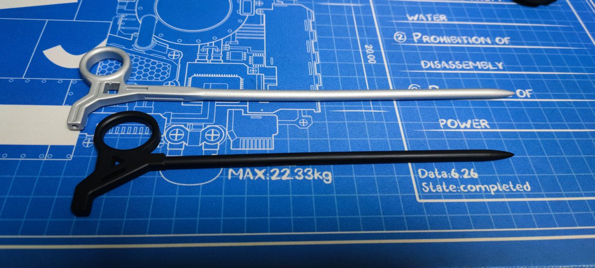

kernarme（结束了被害妄想
@oct424242
@Cheese_Ghostfox 好喜欢这个！狐师会出售吗x

☯️🧬霊狐製作所 公式ツイッター
@Cheese_Ghostfox
两版发簪的设计对比与3D打印的不同可选工艺:
JLC black:出色的精准度与强度，不错的表面质感，不甚美观的黑色外观
Grey 喷漆:更鲜明的颜色，但是表面塑料感很重，而且精准度与强度都很差(可以看到一个明显的翘曲)
狐建议您在能接受纯黑色外观的前提下选择JLC Black喵! https://t.co/uOJdXfxOut